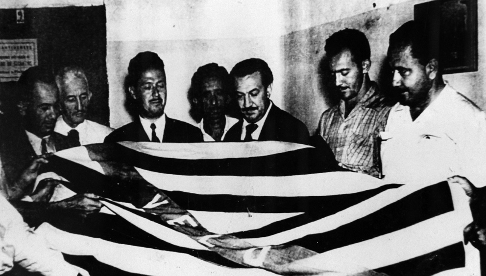

<style>
    section {
        display: flex;
        flex-direction: row;
        align-items: center;
        justify-content: center;
        gap: 40px;
        margin: 40px 0;
    }


    .conteudo {
        max-width: 1000px;
        font-family: Arial, sans-serif;
        font-size: 16px;
        line-height: 1.6;
        color: #333;
        text-align: justify;
    }

    .conteudo p {
        
        margin-bottom: 16px;
    }
    img {
        width: 600px;
        height: auto;
        border-radius: 8px;
    }
</style>
<section>
    <div class="conteudo">
        
    <p>Recém-chegado à Comarca de Porto Nacional, o juiz Feliciano Machado Braga teve contato com as ideias separatistas de Trajano Coelho Neto, divulgadas pelo Ecos do Tocantins, e de Lysias Rodrigues, pelo jornal A Tarde. Sensível aos anseios de independência do norte goiano, entregou-se plenamente à causa, mesmo ciente dos riscos à sua carreira.<p>

    <p>Ganhando o apoio popular, Feliciano Machado Braga deu início a um intenso movimento político: organizou palestras, passeatas, comícios e manifestos em prol da criação do Estado do Tocantins. Comprometido com a causa, compôs um hino e escolheu um padroeiro para o futuro estado.</p>


    <p>Antecipando a necessidade de respaldo jurídico e com base na Constituição vigente à época, instituiu a “Comissão de Estruturação Jurídica do Estado do Tocantins”, da qual foi eleito presidente. Diversas comissões foram formadas para estudar os caminhos legais e administrativos da separação, resultando também na criação de uma bandeira e de um hino oficial.
    </p>
    
    </div>
    <div class="imagem">
        
    </div>


</section>